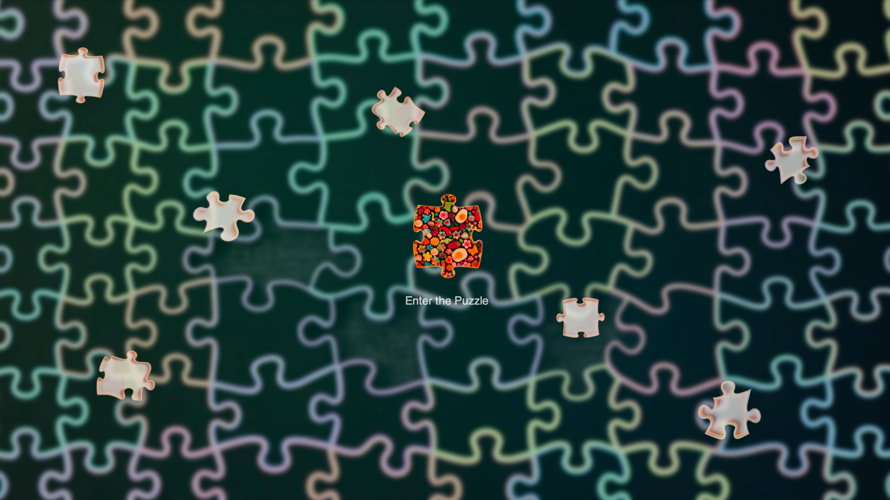
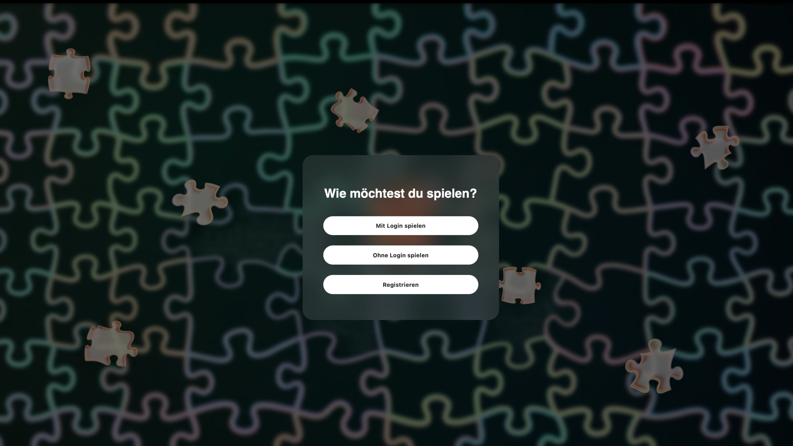
A web-based puzzle platform that combines gameplay, user accounts, progress tracking, and administrative control within an interactive system.
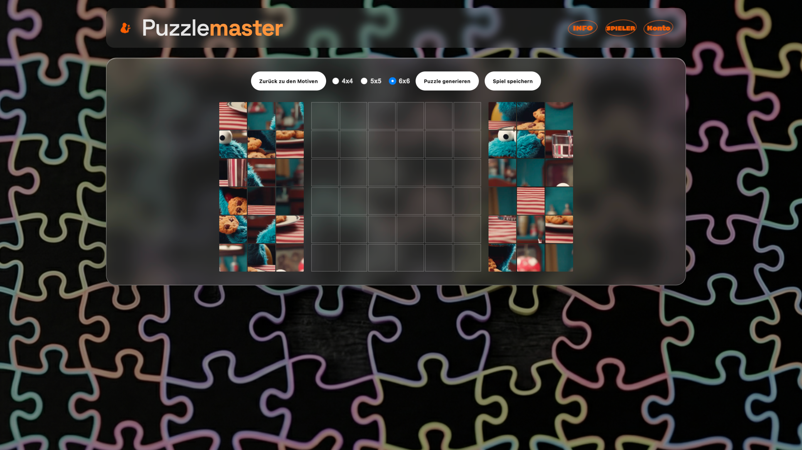
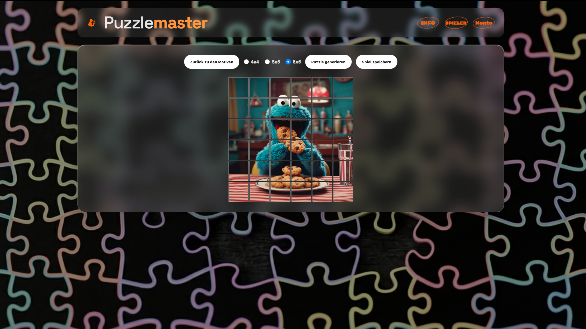
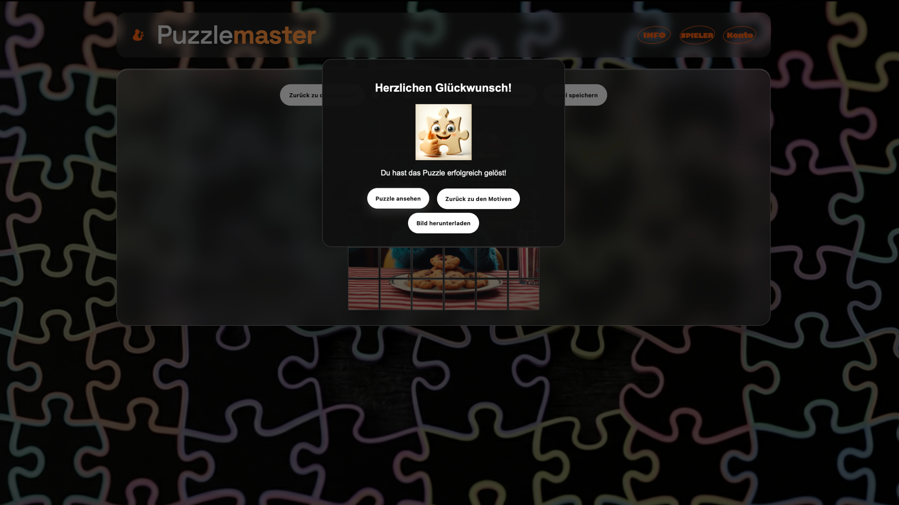
Developed as part of a web application course, this project explores how a game can function as a structured digital system rather than a standalone visual interface. Users can choose different puzzle motifs and difficulty levels (4x4, 5x5, 6x6), which are dynamically divided into draggable puzzle pieces. Their progress can be saved during gameplay, resumed later, and tracked through individual user accounts.
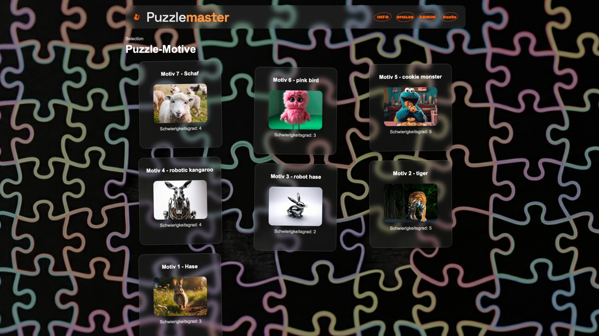
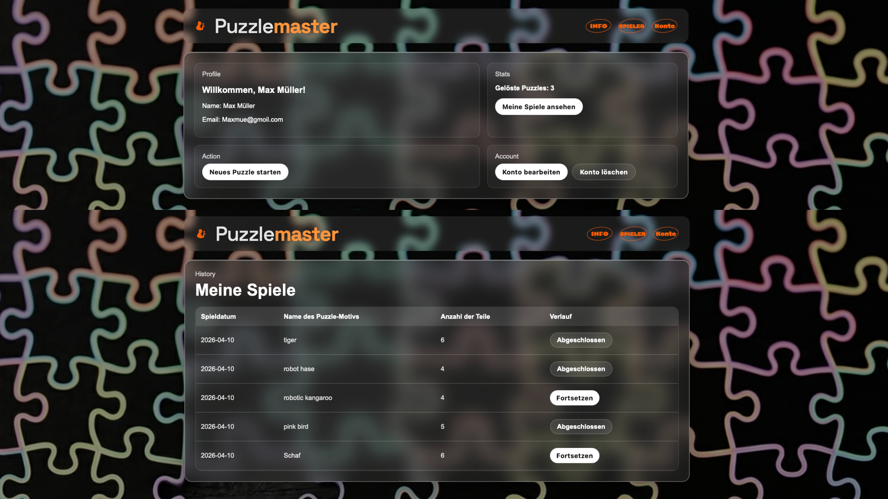
The platform connects user interaction with stored data. Each player can view which motif they played, how many pieces were selected, and whether the puzzle is still in progress or already completed. This transforms the experience from a simple puzzle game into a system that records and reflects user activity over time.
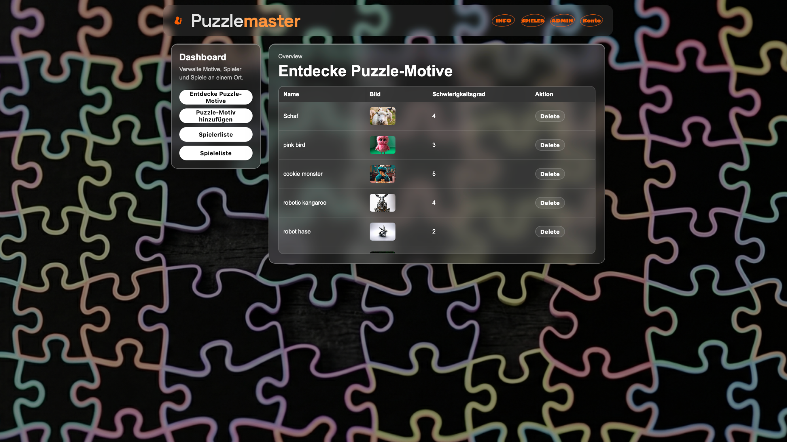
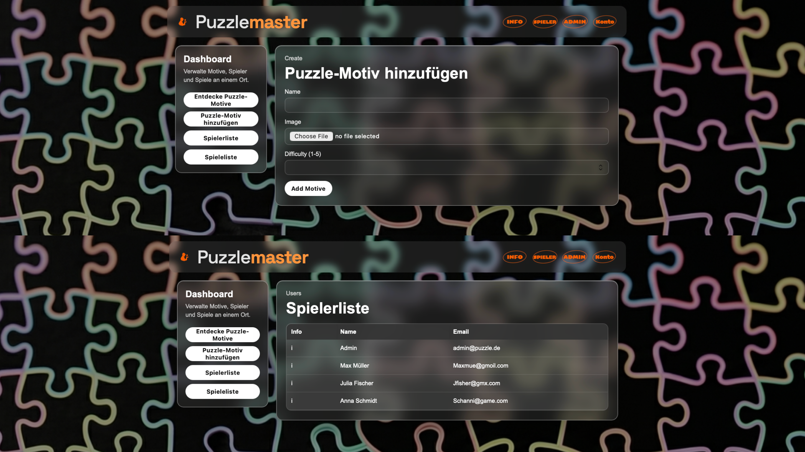
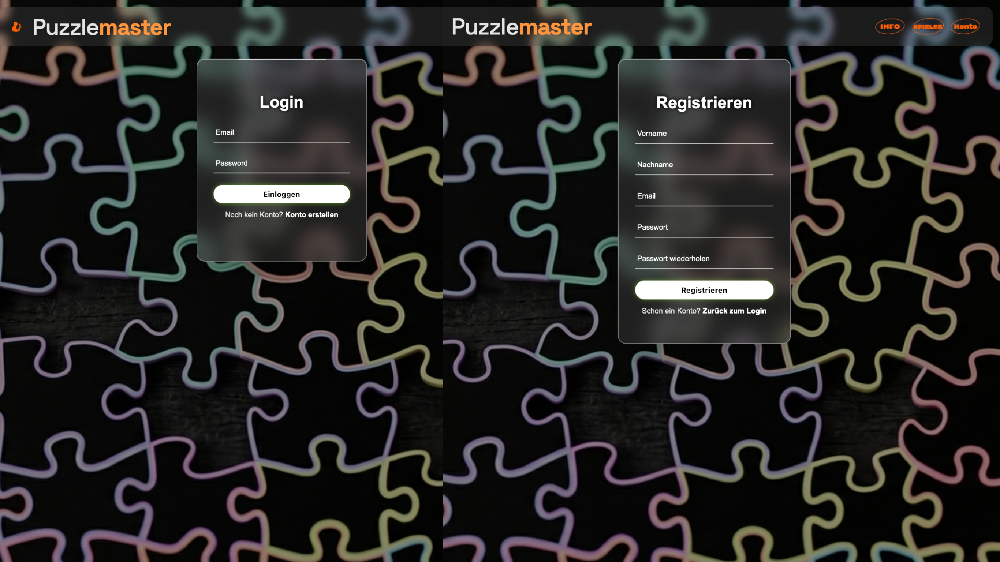
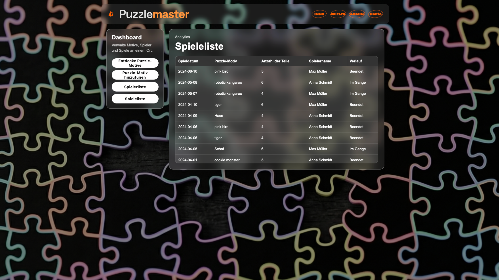
In addition to the player side, the project also includes an admin interface. The administrator can review all user activity, monitor current puzzle states, and manage puzzle motifs by adding or removing images. This expanded the project from a game interface into a database-driven web application with both user-facing and administrative functions.
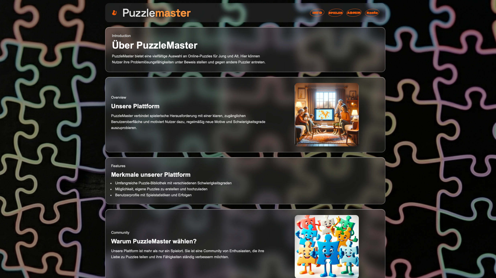
My Role
Group Project
I was primarily responsible for the core implementation of the project.
My work included developing most of the game system, designing the overall layout, building the draggable puzzle interaction, and contributing to the HTML structure, localhost integration, and database-connected functionality.